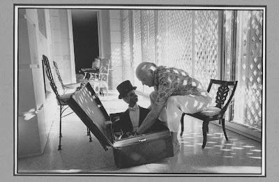

From Tom Farrell
2/24/2010
"Listening to Edgar Bergen and Charlie on the Chase an Sanborn hour on radio got my interest in vent when I was a kid of 14. I got his book at the library and practiced, and practiced.
"A local drug store had a Charlie type doll (with a pull string in the neck) which they called 'Dapper Dan'. You couldn't buy 'Dapper Dan', but you could get him by making purchases at the store and getting a card punched. I had EVERYBODY in my family and my neighborhood buying at that Rexall store and getting my card punched.
"Finally I had a figure. I dressed him a little different, named him 'Jerry McDuff' , won an amateur contest in school, and went on to perform when the Ted Mack radio show came to Cincinnati. All this in a year. In a large part, all this because of Edgar Bergen (note: Jerry McDuff now lives at Vent Haven and I am in my 70's).

"When I first saw the pictue of 'Edgar packing Charlie' on your blog I was really taken by it. I saw in it more than just a vent putting a figure away, but the affection and tenderness displayed. Edgar cushioning the case with his feet to protect Charlie from the hard floor. Charlie, turning to Edgar, seemingly saying, 'Not yet Bergen, I still have my hat on'. Edgar lovingly arranging his friend in just the most comfortable way. The light streaming through the windows seemed to enhance and reflect the awesome and powerful talent of Edgar Bergen with Charlie which almost literally leaps from the picture. " Tom Farrell